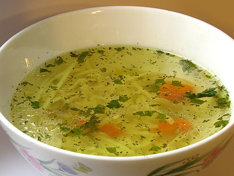

Practicing HTML with Rosół
The following is a basic variant of the recipe for Rosół.

Link to the wikipedia page
Ingredients required:
- Water - 3 litres
- Salt - to taste
- All Spice - 1/2 tablespoon whole
- Bay Leaves - 3 leaves
- Peppercorn - 1/4 tablespoon whole
- Chicken carcass - 1
- Yellow Onion - 1 (and halved)
- Carrots - 3
- Leek - 1
- Parsnip - 2
- Parsley - 1 bunch
- Celeriac - quarter
- Egg noodles - as requested
To make the process smoother, the first thing to do should be to start mise en place with the root vegetables (excluding the onion), however this is entirely optional.
- Bring to boil the 3 litres of water in a suitably large pot, then lower the heat to make it simmer
- Boil the chicken carcass, scooping up the scum as it rises
- Add the prepped vegetables, excluding the onion, into the pot
- Char the halved onion
- Add the onion and the spices into the pot
- Occasionally keep an eye on the pot for potential overboil and lower/increase the heat as needed
- Continue to taste and adjust the salt level as desired
- In a seperate pot, boil some water to cook the egg noodles
- When ready, place the noodles into a reasonably-sized bowl, serving on top the rosół with a little bit of everything in the pot
- Enjoy!